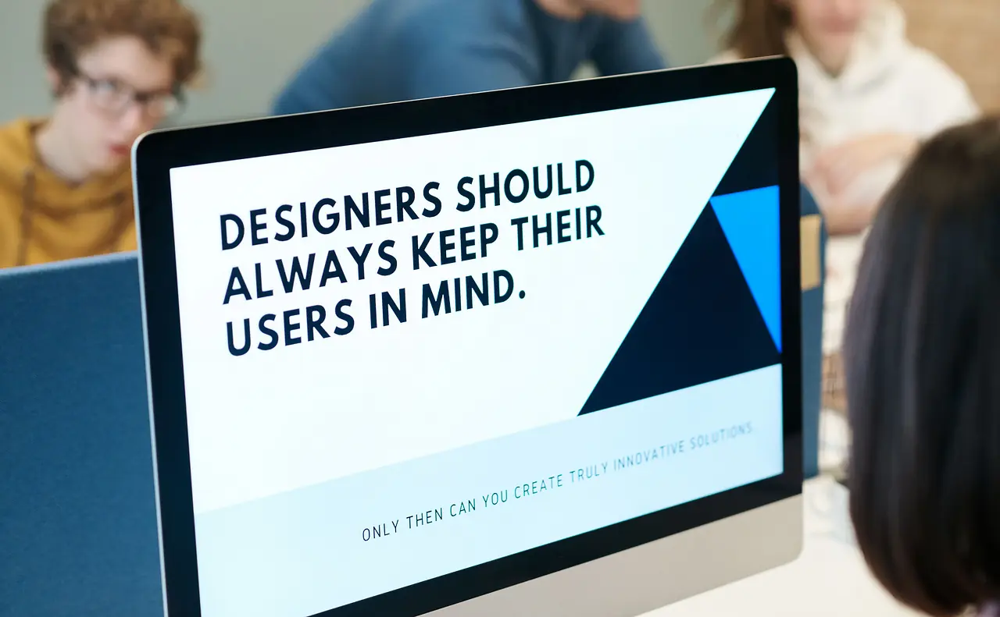

Website
Thiết kế UX/UI website doanh nghiệp: nguyên tắc khiến khách chủ động liên hệ
Website đẹp chưa chắc mang về khách. Điều khiến người xem nhấc máy gọi hay điền form là trải nghiệm: họ thấy ngay điều cần thấy, tin được doanh nghiệp và làm bước tiếp theo không vướng víu. Bài này tóm tắt các nguyên tắc UX/UI cốt lõi cho website doanh nghiệp, dựa trên nghiên cứu và tiêu chuẩn có nguồn, kèm checklist tự kiểm tra.

Thiết kế UX/UI website doanh nghiệp hiệu quả là thiết kế giúp khách tìm được thông tin cần trong vài giây, tin rằng doanh nghiệp có thật và đáng tin, rồi liên hệ chỉ bằng một hai thao tác. Năm nguyên tắc quyết định điều đó là: phân cấp thị giác rõ ràng, nút kêu gọi hành động (CTA) nổi bật và cụ thể, form liên hệ ngắn, tín hiệu niềm tin đặt đúng chỗ, và khả năng tiếp cận để ai cũng đọc và bấm được.
UX (trải nghiệm người dùng) là cách website vận hành: khách đi từ đâu đến đâu, có bị kẹt không. UI (giao diện người dùng) là phần nhìn thấy: chữ, màu, khoảng trắng, nút bấm. Hai phần này phải đi cùng nhau; giao diện sang trọng mà khách không tìm thấy số điện thoại vẫn là website thất bại. Bài này giả định bạn đã có bộ khung trang; nếu chưa, hãy đọc trước bài website doanh nghiệp cần những trang gì.
UX và UI khác nhau thế nào với chủ doanh nghiệp
| UX (trải nghiệm) | UI (giao diện) | |
|---|---|---|
| Trả lời câu hỏi | Khách có làm được việc họ muốn không? | Khách thấy gì, cảm nhận thế nào? |
| Ví dụ quyết định | Thứ tự các khối trên trang chủ, số ô trong form, nút Zalo đặt ở đâu | Cỡ chữ, màu nút, khoảng cách, hình ảnh, biểu tượng |
| Sản phẩm trung gian | Sơ đồ trang, luồng đi, bản khung (wireframe) | Bản thiết kế chi tiết, bộ quy chuẩn màu chữ |
| Dấu hiệu làm chưa tốt | Khách gọi điện hỏi những thứ đã có trên web, bỏ form giữa chừng | Trang trông lộn xộn, chữ khó đọc, thiếu đồng bộ giữa các trang |
Thứ tự đúng là UX trước, UI sau: chốt nội dung và luồng đi, rồi mới tô màu. Làm ngược lại thường dẫn tới việc sửa giao diện nhiều vòng vì bố cục không chứa nổi nội dung thật.
Nguyên tắc 1: phân cấp thị giác để khách thấy điều quan trọng trước
Khách không đọc website từ đầu đến cuối. Nghiên cứu theo dõi chuyển động mắt của Nielsen Norman Group, bắt đầu từ năm 2006 và được nhóm này xem xét lại sau hơn mười năm, mô tả kiểu đọc lướt hình chữ F: mắt quét ngang phần trên, quét ngang một đoạn ngắn hơn bên dưới, rồi lướt dọc mép trái. Kiểu đọc này xuất hiện khi trang là một khối chữ ít định dạng và người đọc chỉ muốn tìm nhanh. Nhóm nghiên cứu gọi đó là kiểu mặc định khi trang không có tín hiệu nào dẫn mắt tới thông tin quan trọng.
Nói cách khác, nhiệm vụ của thiết kế là tạo tín hiệu dẫn mắt. Các khuyến nghị của nhóm này áp dụng thẳng cho website doanh nghiệp:
- Đưa điểm quan trọng nhất vào hai đoạn đầu của trang.
- Dùng tiêu đề và tiêu đề phụ nổi bật hơn hẳn chữ thường; bắt đầu tiêu đề bằng từ mang nhiều thông tin nhất.
- Gom nhóm nội dung liên quan bằng khung viền hoặc nền khác màu.
- In đậm từ khóa quan trọng, dùng danh sách gạch đầu dòng cho các ý song song.
- Chữ liên kết phải nói rõ nơi đến, tránh "bấm vào đây" hay "xem thêm" chung chung.
Áp dụng vào màn hình đầu tiên
Màn hình đầu của trang chủ chỉ nên có bốn thứ theo thứ tự lớn đến nhỏ: một tiêu đề nói bạn làm gì cho ai, một câu bổ sung ngắn, một nút hành động chính, một hình ảnh thật. Thanh trượt nhiều ảnh chạy tự động, ba bốn nút cùng cỡ, khẩu hiệu trừu tượng đều làm mắt khách không biết dừng ở đâu. Khoảng trắng không phải chỗ trống lãng phí; nó là công cụ để tách nhóm và làm nổi điều quan trọng.
Nguyên tắc 2: nút kêu gọi hành động rõ, ít và đúng chỗ
Nút CTA là nơi website chuyển người xem thành khách hỏi. Vài quy tắc thực dụng:
- Một hành động chính trên mỗi trang. Với website dịch vụ, đó thường là "Nhận báo giá", "Đặt lịch tư vấn" hoặc "Nhắn Zalo". Hành động phụ (xem dự án, tải hồ sơ năng lực) dùng kiểu nút nhẹ hơn.
- Chữ trên nút nói kết quả, không nói thao tác: "Nhận báo giá trong 24 giờ" rõ hơn "Gửi". Chỉ hứa điều bạn thật sự làm được.
- Màu nút chính dùng nhất quán trên toàn website và không trùng màu với các thành phần trang trí, để mắt khách học được "màu này là để bấm".
- Lặp lại CTA ở cuối mỗi khối nội dung dài, không chỉ ở đầu trang. Người đọc hết phần quy trình là lúc họ sẵn sàng hỏi nhất.
- Trên điện thoại, cân nhắc thanh liên hệ cố định ở cạnh dưới màn hình với nút Gọi và Zalo, vì đó là vùng ngón cái dễ chạm.
Với khách Việt Nam, Zalo và gọi điện thường là kênh được chọn nhiều hơn form. Thiết kế tốt không ép khách vào một kênh mà đặt các kênh họ quen dùng ở đúng chỗ họ cần. Bài landing page bán hàng chuyển đổi cao có thêm cách bố trí CTA cho trang chạy quảng cáo.
Nguyên tắc 3: form liên hệ ngắn, rõ, không bắt khách đoán
Mỗi ô thêm vào form là thêm một lý do để khách bỏ đi. Một form liên hệ cho website dịch vụ thường chỉ cần: họ tên, số điện thoại, nhu cầu (chọn từ danh sách) và một ô ghi chú không bắt buộc. Email, địa chỉ, ngân sách chỉ nên hỏi khi bạn thật sự dùng tới ở bước đầu.
- Nhãn đặt phía trên ô nhập, luôn hiển thị. Đừng chỉ dùng chữ mờ trong ô (placeholder) thay nhãn, vì chữ đó biến mất khi khách bắt đầu gõ và họ quên mình đang điền gì.
- Đánh dấu rõ ô bắt buộc và báo lỗi ngay cạnh ô sai, bằng lời dễ hiểu: "Số điện thoại cần 10 chữ số" thay vì "Dữ liệu không hợp lệ".
- Chọn đúng kiểu bàn phím: ô số điện thoại mở bàn phím số trên điện thoại.
- Sau khi gửi, hiện thông báo rõ ràng: đã nhận, ai sẽ liên hệ, trong bao lâu. Màn hình trắng hoặc tải lại trang làm khách lo không biết đã gửi được chưa.
- Ghi chú về dữ liệu cá nhân cạnh nút gửi, dẫn tới trang chính sách bảo mật. Luật Bảo vệ dữ liệu cá nhân số 91/2025/QH15 có hiệu lực từ 01/01/2026, nên việc nói rõ mục đích thu thập số điện thoại vừa là phép lịch sự vừa là việc nên làm; chi tiết pháp lý hãy hỏi người có chuyên môn.
Nguyên tắc 4: tín hiệu niềm tin đặt đúng chỗ
Bộ nguyên tắc về độ tin cậy của website do B.J. Fogg tổng hợp trong dự án Stanford Web Credibility (2002) vẫn đúng đến nay. Mười nguyên tắc gồm: giúp người đọc dễ kiểm chứng thông tin, cho thấy có một tổ chức thật đứng sau website, làm nổi chuyên môn, cho thấy những con người trung thực đứng sau, giúp liên hệ dễ dàng, thiết kế trông chuyên nghiệp và phù hợp mục đích, dễ dùng và hữu ích, cập nhật nội dung thường xuyên, tiết chế nội dung quảng cáo, và tránh mọi lỗi dù nhỏ.
Chuyển thành việc cụ thể trên website doanh nghiệp Việt Nam:
- Địa chỉ văn phòng, mã số doanh nghiệp, số điện thoại cố định hoặc hotline hiển thị ở chân trang.
- Ảnh đội ngũ, xưởng, cửa hàng thật thay cho ảnh người mẫu chung chung.
- Dự án có ảnh, bối cảnh và việc đã làm; nhận xét khách hàng chỉ đăng khi được khách đồng ý và có thể kiểm chứng.
- Chứng nhận, giấy phép hành nghề đặt gần nơi khách ra quyết định, ví dụ cạnh form báo giá.
- Không lỗi chính tả, không ảnh vỡ, không liên kết chết, không mục tin tức bỏ hoang.
- Không tự nhận "số 1", "hàng đầu" khi không có căn cứ; khách ngày càng nhạy với lời quảng cáo suông.
Với website hướng tới phân khúc cao, cảm nhận chất lượng còn đến từ độ chỉn chu của chữ, ảnh và chuyển động; bài thiết kế website cao cấp cho doanh nghiệp nói kỹ hơn về tiêu chí này.

Nguyên tắc 5: khả năng tiếp cận, để ai cũng đọc và bấm được
Khả năng tiếp cận không chỉ dành cho người khuyết tật. Người lớn tuổi, người đọc dưới nắng trên điện thoại, người đang cầm máy một tay đều hưởng lợi. Bộ tiêu chuẩn WCAG 2.2 của W3C đưa ra các mức đo được:
| Tiêu chí | Yêu cầu | Áp dụng trên website |
|---|---|---|
| Độ tương phản tối thiểu (1.4.3) | Chữ thường tối thiểu 4,5:1; chữ lớn (từ 18pt, hoặc 14pt đậm) tối thiểu 3:1 | Tránh chữ xám nhạt trên nền trắng, chữ trắng trên ảnh sáng |
| Kích thước vùng bấm (2.5.8) | Tối thiểu 24 × 24 CSS pixel; mức AAA (2.5.5) là 44 × 44 | Nút Gọi, Zalo, mục menu trên điện thoại nên rộng rãi, có khoảng cách |
| Văn bản thay thế cho ảnh | Ảnh mang thông tin cần mô tả bằng chữ | Viết alt mô tả đúng ảnh sản phẩm, dự án |
| Thao tác bằng bàn phím | Mọi chức năng dùng được bằng bàn phím, thấy rõ vị trí đang chọn | Không tắt viền focus; menu, form dùng được bằng phím Tab |
Các công cụ miễn phí như Lighthouse trong trình duyệt Chrome hoặc PageSpeed Insights có mục kiểm tra khả năng tiếp cận, giúp phát hiện nhanh lỗi tương phản, thiếu alt, thiếu nhãn form. Chúng không thay được việc tự dùng thử, nhưng là bước kiểm tra đầu tiên rất rẻ.
Ví dụ minh họa: sửa trang chủ một spa
Tình huống giả định, không phải khách hàng thật: trang chủ một spa ở Hà Nội mở đầu bằng thanh trượt năm ảnh, khẩu hiệu "Đánh thức vẻ đẹp tiềm ẩn", ba nút cùng màu "Dịch vụ", "Ưu đãi", "Liên hệ". Form đặt lịch có tám ô, chữ mô tả màu xám nhạt trên nền hồng phấn. Trên điện thoại, số hotline là ảnh nên không bấm gọi được.
Hướng sửa theo năm nguyên tắc: thay thanh trượt bằng một ảnh thật không gian spa và tiêu đề "Chăm sóc da và trị liệu body tại Cầu Giấy"; giữ một nút chính "Đặt lịch qua Zalo", nút phụ "Xem bảng giá"; rút form còn họ tên, số điện thoại, dịch vụ, giờ mong muốn; tăng độ tương phản chữ; thêm thanh Gọi và Zalo cố định cạnh dưới trên điện thoại; đưa ảnh chứng chỉ kỹ thuật viên và địa chỉ kèm bản đồ lên gần form. Không cần thay màu thương hiệu, chỉ cần sắp xếp lại thứ tự ưu tiên. Trang thiết kế website spa và mẫu website mỹ phẩm cho thấy cách Dream Labs trình bày ngành gần với ví dụ này.
Sai lầm thường gặp
- Thiết kế cho chủ doanh nghiệp xem, không phải cho khách dùng. Hiệu ứng ấn tượng trên máy tính văn phòng nhưng chậm và khó bấm trên điện thoại khách.
- Quá nhiều nút cùng mức ưu tiên, khiến không nút nào nổi bật.
- Ẩn thông tin liên hệ trong một trang riêng, không có ở đầu và chân trang.
- Form dài và bắt buộc mọi ô, hỏi cả những thông tin chưa dùng tới.
- Chữ màu nhạt trên nền nhạt vì "trông sang", làm người lớn tuổi khó đọc.
- Menu kiểu "sáng tạo" với tên mục khó hiểu hoặc biểu tượng không có chữ.
- Không thử với người thật. Năm phút nhờ một người chưa biết website tìm số điện thoại và gửi form đủ phát hiện nhiều lỗi mà đội làm web không thấy.
Checklist UX/UI tự kiểm tra trong 15 phút
- Mở trang chủ trên điện thoại: trong 5 giây có hiểu doanh nghiệp làm gì, cho ai không?
- Màn hình đầu có đúng một nút hành động chính nổi bật?
- Bấm gọi được số điện thoại và mở được Zalo từ mọi trang?
- Form có từ 5 ô trở xuống, nhãn nằm trên ô, báo lỗi dễ hiểu, có thông báo sau khi gửi?
- Chân trang có địa chỉ, mã số doanh nghiệp, giờ làm việc?
- Có ảnh thật về đội ngũ, sản phẩm hoặc dự án?
- Chữ nội dung đủ đậm, đủ lớn để đọc ngoài trời; chạy Lighthouse không báo lỗi tương phản?
- Nút và liên kết trên điện thoại đủ rộng, không sát nhau?
- Không có liên kết chết, lỗi chính tả, mục "Đang cập nhật"?
- Nhờ một người ngoài tìm thông tin và gửi form, ghi lại chỗ họ lúng túng.
Thiết kế UX/UI website tại Dream Labs
Ở Dream Labs, UX đi trước UI trong mọi dự án: chúng tôi chốt sơ đồ trang, thứ tự khối nội dung và vị trí nút hành động trên bản khung, rồi mới thiết kế giao diện chi tiết và kiểm tra trên điện thoại thật. Gói Cơ bản 8.000.000đ dùng mẫu được tinh chỉnh theo thương hiệu, phù hợp khi cần ra mắt nhanh. Gói Chuyên nghiệp 18.000.000đ thiết kế riêng, viết nội dung chuẩn SEO và đặt mục tiêu điểm Lighthouse từ 90 trở lên. Gói Cao cấp Liên hệ thêm đa ngôn ngữ, hiệu ứng 3D/WebGL, tích hợp thanh toán hoặc CRM và trợ lý AI.
| Gói | Giá | Thời gian | Bao gồm |
|---|---|---|---|
| Cơ bản | 8.000.000đ | 7–10 ngày4 vòng sửa | Có mặt chuyên nghiệp trên Google và điện thoại trong khoảng 10 ngày, khách tìm thấy và liên hệ được ngay.
|
| Chuyên nghiệpPhổ biến nhất | 18.000.000đ | 14–21 ngày9 vòng sửa | Website riêng đúng tầm thương hiệu, tự đăng bài để có khách từ Google lâu dài, không phụ thuộc người làm.
|
| Cao cấp | Liên hệ | 30–45 ngàyKhông giới hạn trong phạm vi | Trải nghiệm đủ khác biệt để định vị cao cấp, bán hàng và tiếp khách trực tuyến, phục vụ cả khách nước ngoài.
|
Bạn có thể trải nghiệm trực tiếp các mẫu website demo như mẫu website nước hoa để cảm nhận cách phân cấp thị giác và CTA hoạt động, xem trang thiết kế website và bảng giá đầy đủ. Cần góp ý nhanh cho website hiện tại, nhắn Zalo 0934 246 420.
Câu hỏi thường gặp
UX và UI, cái nào quan trọng hơn?
Cả hai cần nhau, nhưng UX nên làm trước. Bố cục và luồng đi đúng mà giao diện bình thường vẫn mang về khách; giao diện đẹp mà khách không tìm được cách liên hệ thì không.
Website doanh nghiệp nhỏ có cần thiết kế UX/UI riêng không?
Không nhất thiết phải thiết kế từ đầu. Một mẫu tốt được tinh chỉnh đúng nguyên tắc phân cấp, CTA và form vẫn hiệu quả. Thiết kế riêng đáng đầu tư khi bạn cần khác biệt thương hiệu hoặc có luồng đặc thù như đặt lịch, báo giá nhiều bước.
Form liên hệ nên có bao nhiêu ô?
Càng ít càng tốt, thường 3 đến 5 ô: họ tên, số điện thoại, nhu cầu và ghi chú không bắt buộc. Chỉ hỏi thêm khi thông tin đó thật sự cần ở bước liên hệ đầu tiên.
Nên đặt nút Zalo hay form liên hệ?
Nên có cả hai. Nhiều khách Việt Nam thích nhắn Zalo hoặc gọi ngay, trong khi một số khách muốn để lại thông tin ngoài giờ làm việc. Hãy đo xem kênh nào mang về nhiều khách hỏi để ưu tiên vị trí.
WCAG là gì, doanh nghiệp có bắt buộc tuân thủ không?
WCAG là bộ hướng dẫn về khả năng tiếp cận nội dung web của W3C. Bài viết này không đánh giá nghĩa vụ pháp lý của từng doanh nghiệp, nhưng các tiêu chí như độ tương phản 4,5:1 và vùng bấm tối thiểu 24 × 24 pixel giúp mọi khách đọc và bấm dễ hơn, nên đáng áp dụng.
Làm sao biết thiết kế mới có tốt hơn cũ?
So sánh số cuộc gọi, tin nhắn Zalo, form gửi về trước và sau khi thay đổi bằng công cụ đo như Google Analytics 4, đồng thời nhờ vài người dùng thử thực hiện các việc cụ thể và quan sát chỗ họ lúng túng.
Thiết kế UX/UI có ảnh hưởng tới SEO không?
Có, gián tiếp. Cấu trúc tiêu đề rõ, liên kết nội bộ có chữ mô tả, trang tải nhanh và dùng tốt trên điện thoại vừa giúp người đọc vừa giúp công cụ tìm kiếm hiểu nội dung. Chi tiết xem bài thiết kế website chuẩn SEO trên blog Dream Labs.
Nguồn ảnh: ảnh bìa: Pixabay / Pexels · ảnh 1: Fabian Wiktor / Pexels · ảnh 2: fauxels / Pexels. Ảnh dùng theo giấy phép miễn phí của Pexels, chỉ mang tính minh họa.
Bắt đầu cùng Dream Labs
Muốn biết website của bạn đang làm khách bỏ đi ở đâu?
Gửi đường dẫn website qua Zalo cho Dream Labs. Chúng tôi xem nhanh bố cục, nút kêu gọi hành động, form và độ dễ đọc trên điện thoại, rồi gợi ý những điểm nên sửa trước.